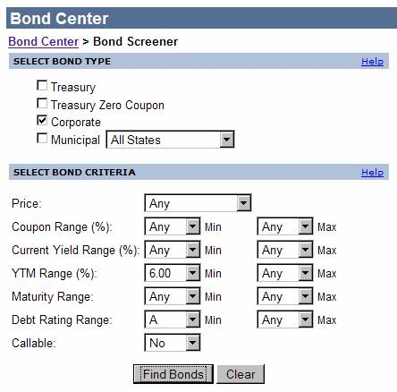
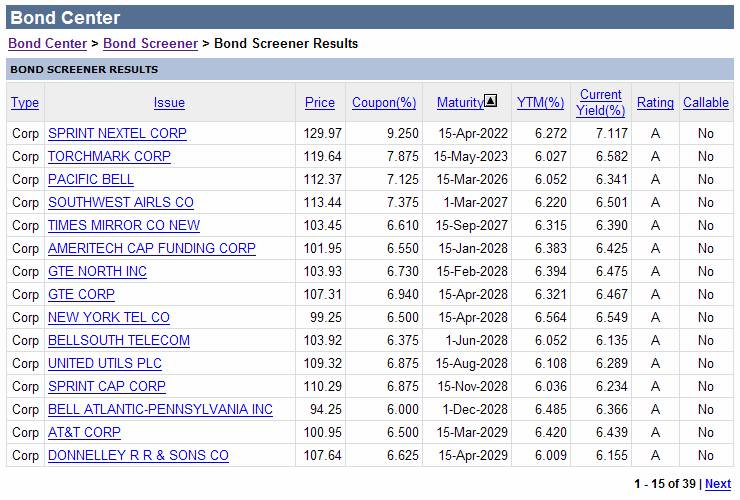

Bond ScreenerYahoo! Finance has a terrific resource http://screen.yahoo.com/bonds.html for locating bond issues of potential interest. As you can see in the screen shot at right, you can search for corporates, municipals, and treasuries with and without coupons and you can narrow your search to a range of coupon rates, current yield, yield to maturity, debt rating, and whether or not the bond is callable. Keep in mind that BondManager doesn’t currently support analysis of bonds with callable features.
Let’s say you hope to find an ‘A’ or better rated corporate bond with a yield to maturity of 7% or better. You fill out the screen something like the one at right, click ‘Find Bonds’ and … oops, at this point in time (February 2006), there aren’t any! Okay, how about 6%? This time, your input screen would look exactly like the one at right and your results would look something like the following screen shot indicating that there are thirty-nine candidates that meet your search criteria. So how do you choose?
When you narrow the field according to yield to maturity on instruments of fairly high quality, you tend to get candidates that perform similarly. After yield and quality, some remaining considerations would be price of course, but time to maturity, duration, and sensitivity to changes in prevailing market yields might also play a role in your decision process. Price is obvious so it needs no further support. Yahoo’s Bond Screener will sort candidates by maturity, so you’re set there.

Duration is the traditional comparative measure which is closely related to the first derivative of bond value with respect to time, and Bond Analyzer can help you narrow the field thereby. You’ll note that the Bond Analyzer computes Imputed Market Value for you given ‘Delta YTM’ – a pro forma change in market yields. Imputed Market Value is a function of modified duration and convexity. Convexity is closely related to the second derivative of bond value with respect to time. So, if you have an idea regarding where yields are headed, you can scroll through bonds in your database, taking note of those most resistant to loss of value as rates rise or those best positioned to take advantage of falling market rates. For numerical accuracy, Imputed Market Value in the Bond Analyzer is the way to go, but if you’re just shopping, you may find that the Rate Senstivity Explorer provides the picture you need. It allows you to visually compare the Imputed Market Value of four different issues across a range of changes in yield. Additionally, it allows you to compare prospective candidates with your existing portfolio, so you can select issues that either dilute your exposure to a change in market rates or enhance it, depending on what your crystal ball is telling you.